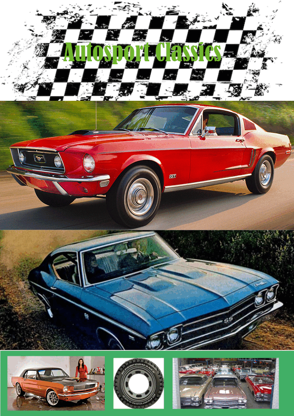
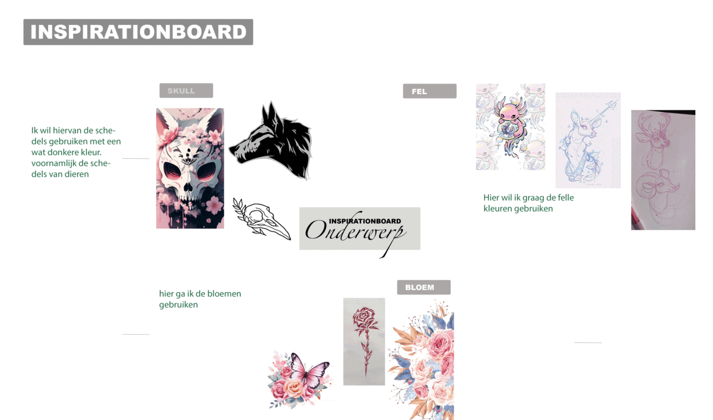

Voor het vak Grafische vormgeving ben ik bezig geweest met een magazine maken. Ik heb hiervoor de app indesign gebruikt. De app Indesign gebruik je voornamelijk voor drukwerk. Ik heb gekozen voor een Classic Autosport magazine, aangezien ik daar al veel van wist hoe het eruit ziet. Het is ook wat makkelijker qua vormgeving, omdat je de auto’s er vooral uit wil laten schieten en je het rustig daardoor moet gaan houden. Je wilt natuurlijk in zo’n magazine duidelijk maken wat voor soort auto’s het zijn. Het belangrijkste van het magazine maken is dat je weet hoe die opgebouwd zit en wat er sowieso in moet zitten.

Voor verdieping ben je bezig met het leren van hoe je een proces maakt en hoe je die goed uitvoert. Met verdieping kies je zelf uit wat je wilt doen. Ik ben met een achterkant van een shirt bezig. Om daar een leuk ontwerp voor te maken. Ik gebruik hiervoor de app Photoshop aangezien ik dat makkelijker vind werken.